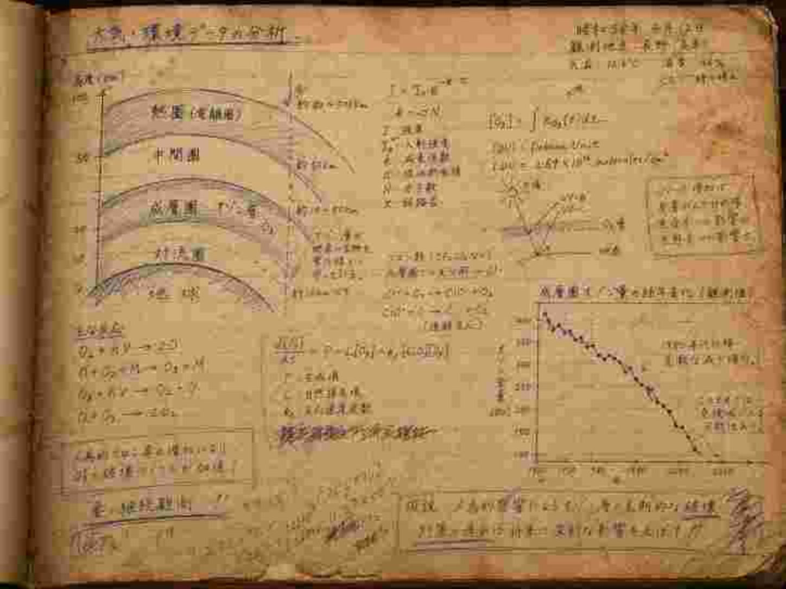
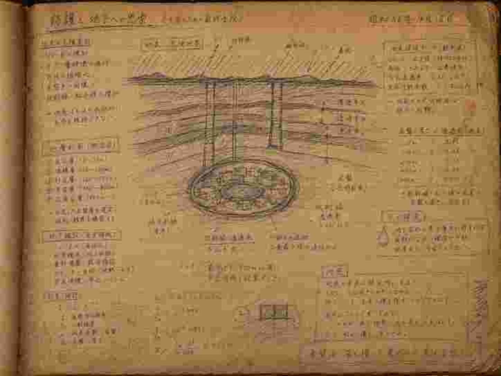
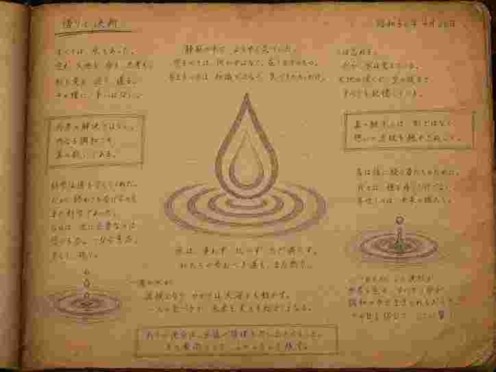

【資料保管庫】初代開祖 研究ノート抜粋
AFL在籍時〜教団設立前夜の思索の軌跡
以下は、初代開祖・水原宗一がAFLに在籍していた晩年から、白黎泉を発見するに至るまでの間に書き残した手記の一部です。
開祖がどのようなデータと向き合い、何を憂い、そしてなぜ「水」へと辿り着いたのか。その深き探求の断片をここに公開します。
※画質が非常に荒いため、ノートに書かれたメモを一部抜粋しています。

資料 [1]：観測データと予測モデルの不一致
「……何度計算をやり直しても結果は同じだ。極域上空を中心とした大気層の減衰率が、我々の想定モデルを遥かに超える速度で進行している。フロンガスの規制や近年の温暖化対策では効果が薄すぎる。大気の上層部が、まるで薄いヴェールのように剥がれ落ち始めている。このまま大気のバリアが失われれば、天の穢れを遮るものは何もなくなる……」

資料 [2]：遮断層の計算と地殻への着目
「……上層の防壁が機能しない以上、我々自らが物理的な遮断層に隠れるしかない。鉛や特殊コンクリートでは範囲が狭すぎる。必要なのは圧倒的な質量の岩盤だ。計算上、地下数百メートルまで潜らなければ、あの光は防ぎきれない。だが、人は光の届かない地下で長くは生きられない。我々の命を繋ぐためには、そこが完全に汚染から隔絶された『無垢なる水源』でなければならないのだ。」

資料 [3]：白黎泉の発見と、新たなる導き
「ついに見つけた。何層もの岩盤に守られ、天からの穢れを一切受けない奇跡の場所を。ここならば、いつか来る『その日』を越えられるかもしれない。
しかし、これを公的機関に報告したところで、パニックと奪い合いが起きるだけだ。愚かな大衆は真実を受け入れず、ただ暴徒と化すだろう。だから私は、彼らの目を欺くことにする。科学ではなく『祈り』という仮面を被せよう。真実を見抜ける賢き者だけを集め、この水を護るのだ。それが、私がこの大地で見つけた最後の答えだ。」